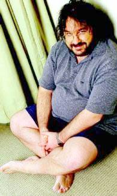

Estrena 18 de desembre de 2002
«- Fitxa tècnica - Cinemes - comentari 1 - comentari 2
| Jackson:
"Acabar la trilogia serà com perdre un amic" El director d''El senyor dels anells' està a punt de culminar un somni al qual ha dedicat 7 anys |
|
| •
LLOC
DE NAIXEMENT: PUKERUA BAY, WELLINGTON (NOVA ZELANDA) • EDAT: 41 ANYS • ALTRES PEL.LÍCULES DESTACADES: 'MAL GUSTO', 'CRIATURAS CELESTIALES', 'AGÁRRAME ESOS FANTASMAS', 'LA COMUNITAT DE L'ANELL' El neozelandès Peter Jackson, de 41 anys, no només és el primer director que té l'au- dàcia de rodar tres pel.lícules seguides, d'una tirada, sinó que també és el primer que rep la premsa en pantalons curts i descalç en ple hivern novaiorquès. Amb els ullets mirant a través d'unes enormes ulleres, entre un bosc de barba i melena, Jackson s'assembla a una d'aquelles estranyes criatures que poblen la Terra Mitjana imaginada per J. R. R. Tolkien que ell mateix ha recreat brillantment |

Peter Jackson, a Nova York. Foto: AP / JIM COOPER |
| --¿Com
es va produir el seu primer contacte amb l'univers de Tolkien? --Vaig llegir El senyor dels anells quan tenia 18 anys i vaig quedar literalment fascinat. En aquella època jo ja feia pel.lícules amb una càmera de 8 mil.límetres, i vaig pensar que del llibre en podia sortir una pel.lícula fascinant. Però sempre em veia a mi mateix com a espectador d'aquesta pel.lícula, mai vaig arribar a pensar que jo la podria dirigir. No vaig tornar a llegir Tolkien fins al 1995. --¿Què el va impulsar llavors a afrontar un repte tan temerari? --Fa 10 o 15 anys hauria sigut completament impossible portar a terme aquesta pel.lícula. La complexitat del món creat per Tolkien semblava inabastable, no es podia reflectir a la pantalla en una sola pel.lícula i amb els escassos mitjans tècnics amb què es comptava fins fa pocs anys. No és possible fer justícia a l'obra de Tolkien comprimint-la en hora i mitja, i per això tots els que ho han intentat han fracassat. --Els seus films parteixen dels llibres de Tolkien, però no fa la impressió que vostè i els seus col.laboradors es considerin uns simples adaptadors de l'obra literària. --Com a cineastes, no hem pensat mai que la nostra feina fos ser fidels a l'obra de Tolkien tal com ell la va escriure i portar-la a la pantalla. La nostra principal responsabilitat era fer una pel.lícula que fos entretinguda per al públic, i per aconseguir-ho vam haver de canviar moltes coses. Però crec que els admiradors del llibre ens han sabut perdonar. --¿Tem que l'expectació generada per La comunitat de l'anell acabi perjudicant l'acollida d'aquesta segona part? --Amb Les dues torres ja no hi ha l'element sorpresa que sí que hi va haver amb el primer film. Aquest cop la gent simplement anirà a veure el segon capítol. I si els va agradar el primer, esperaran que aquest tingui, almenys, la mateixa qualitat que l'anterior. El meu somni és que els agradi més que el primer i, ho confesso, el que em fa més por és decebre'ls. --¿I què podem esperar del tercer capítol? --No ho hauria de dir, sobretot quan estic promocionant la segona part, però a El retorn del rei la història es resol de manera triomfal. És una pel.lícula molt heroica i emocionant. Els petits hòbbits demostren un gran valor a l'hora de travessar Mordor mentre la resta dels personatges se sacrifiquen per poder ajudar-los. Estic molt orgullós de tots ells. --¿Què serà de Peter Jackson quan acabi el muntatge de la tercera part de la trilogia? --He dedicat set anys a aquest projecte. No he experimentat mai el final d'una intensa relació, però el dia que em llevi al matí i ja no hi hagi més Senyor dels anells, serà com haver perdut un gran amic, o com trencar un llarg matrimoni. Una estranya transició. |
|